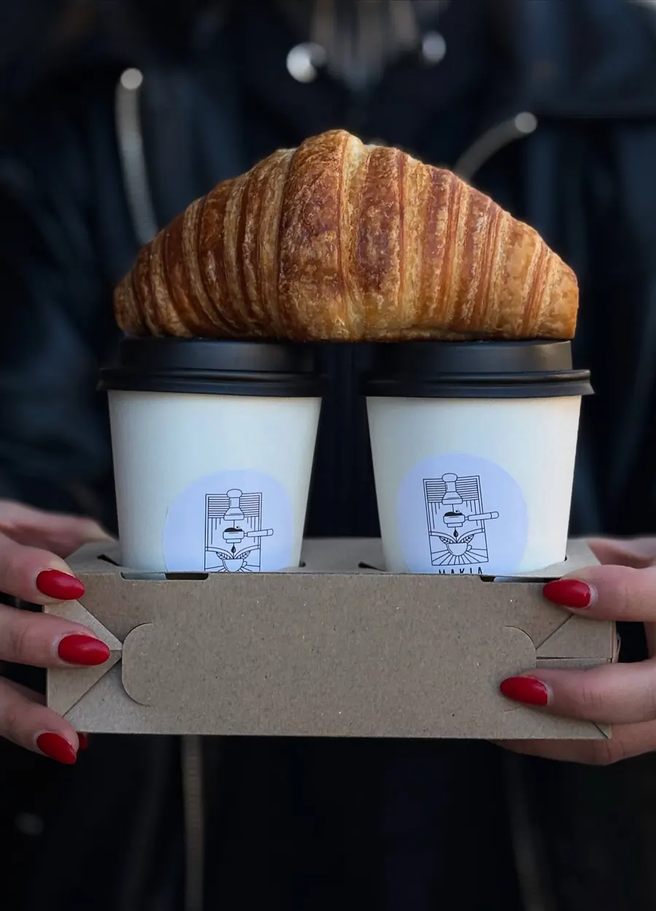
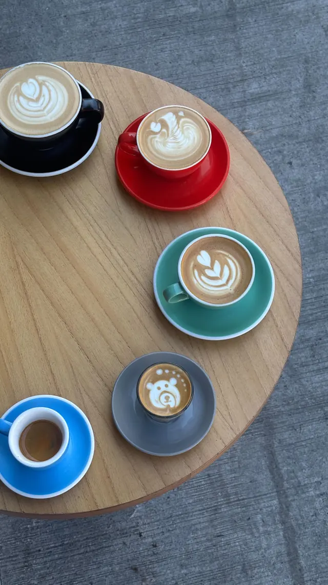
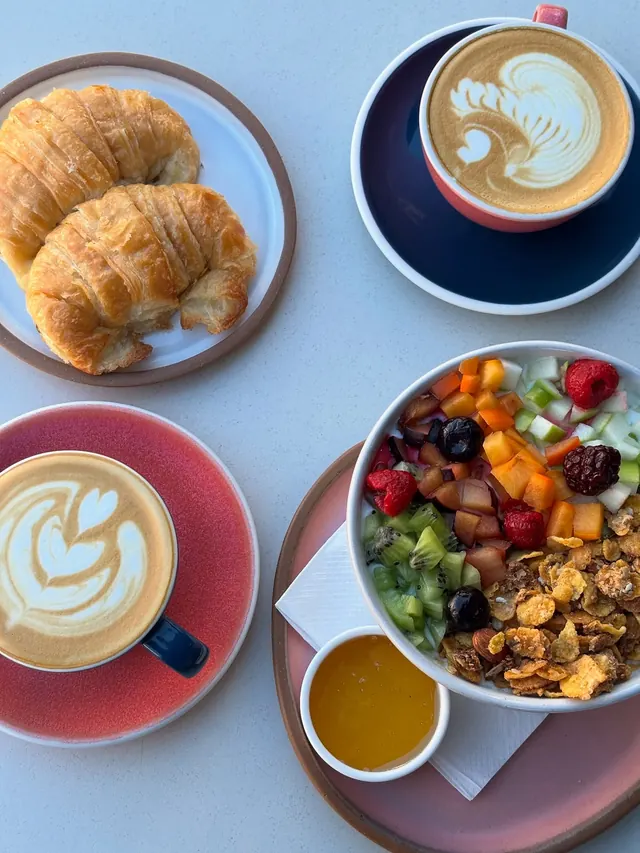
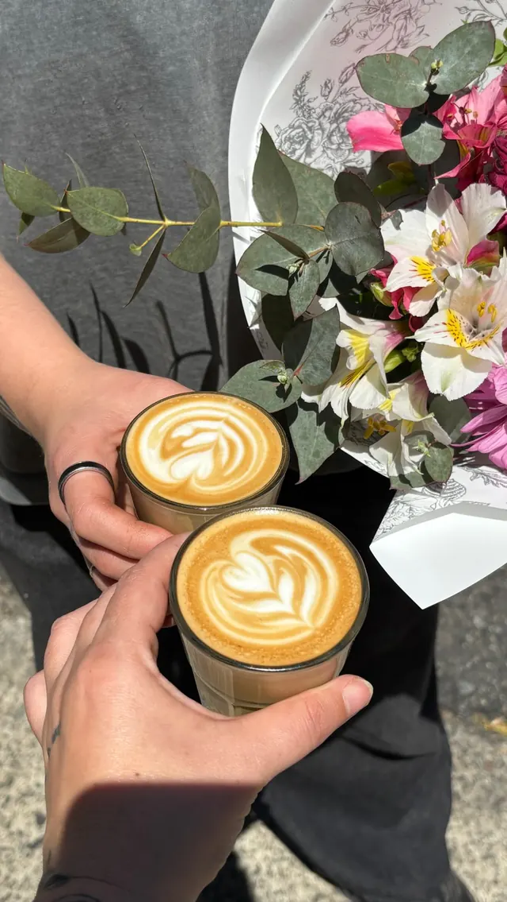
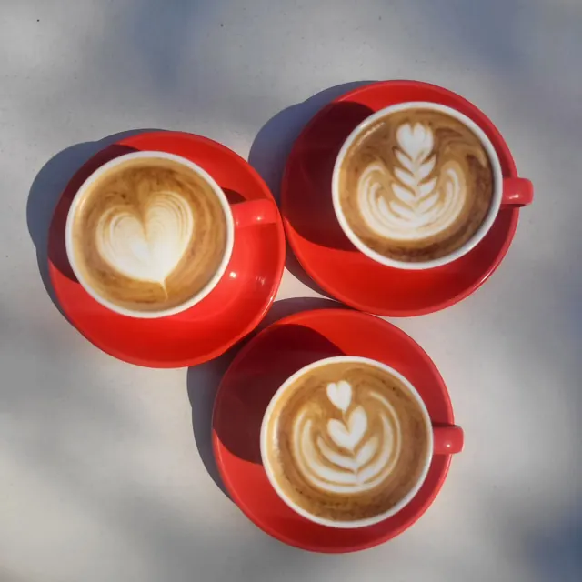
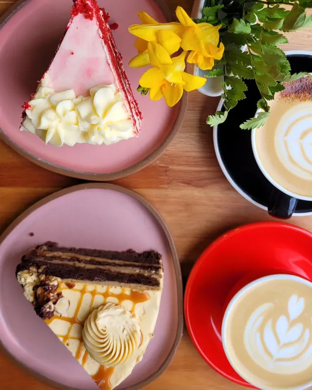
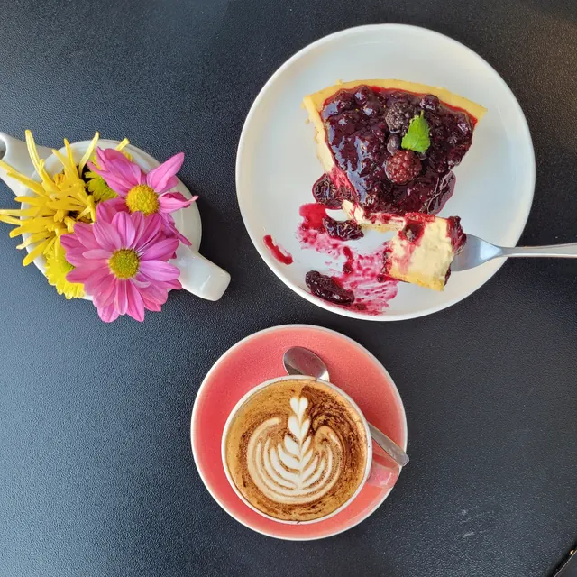
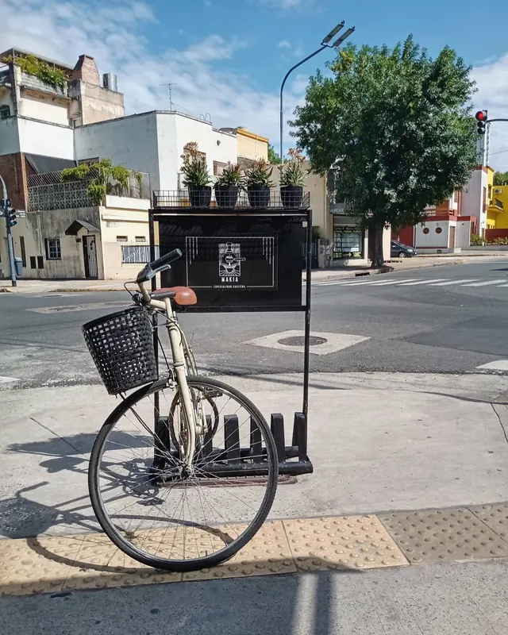
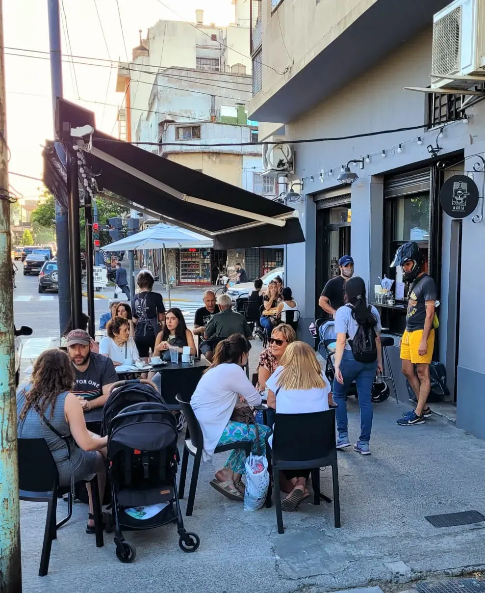
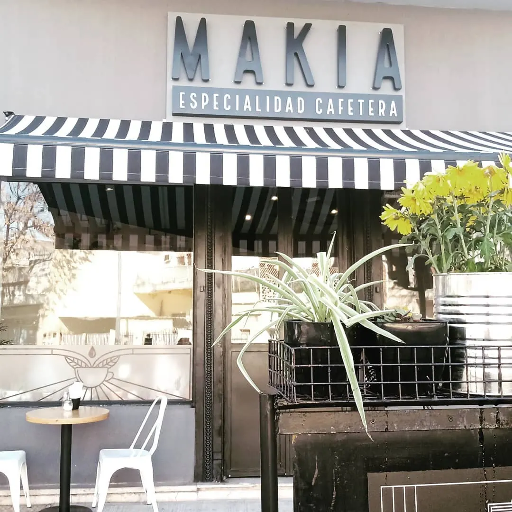

Cumbre
Especialidad cafetera · Villa del Parque
Pedilo antes. Retiralo en la ventanilla.
Café de Puerto Blest en tolva, almuerzos de 12 a 16 y pastelería artesanal. Elegís desde acá, pagás o avisás, y pasás por Jonte 2999.Café de Puerto Blest, almuerzos de 12 a 16 y pastelería. Elegís acá y pasás por Jonte 2999.
- En tolva
- Perú · Amazonas
- Almuerzos
- Lun a sáb · 12 a 16
- Traé tu vaso
- 10% off en el café

Cómo pedir
Tres pasos y tu café te espera
-
1
Elegí
Tu café, el almuerzo o algo dulce de la carta. También el café en grano para tu casa.
-
2
Pagá o avisá
Con Mercado Pago, en efectivo al retirar o confirmando por WhatsApp. Elegís a qué hora pasás.
-
3
Retirá en la ventanilla
Pasás por la ventanilla de Jonte 2999 y te lo damos listo. Con tu vaso térmico, 10% off.
La carta
Café, almuerzos y algo dulce
Los precios de esta demo son de referencia: el local los cambia desde su panel.
Café
Almuerzos · lunes a sábados de 12 a 16
La cordillera de los sándwiches
Elegí una cumbre: cada una es un sándwich de la carta.
En la carta hay más: Crainqueville, Tobas, Litoral, croissants rellenos, ensaladas y la sopa del día. Ver todos los almuerzos →
Café en grano · Puerto Blest
Llevate la tolva a casa
En tolva esta semana
Perú · Amazonas
Finca Monteverde · lavado · Caturra, Typica, Bourbon
Lo molemos al momento de prepararte el pedido, para el método que uses.
Para regalar
Boxes de regalo
Se encargan con 48 h: elegís el día y la franja para retirarlo.
Traé tu vaso
Con tu vaso térmico, 10% off en el café
Lo hacemos en la ventanilla desde siempre: te llevás tu café preferido, tenés descuento y cuidamos el planeta. Ahora también al pedir desde acá.
Ustedes
Cuatro años en el barrio
10,7 mil personas nos siguen en @makia.cafe.








Mucha gente pequeña, en lugares pequeños, haciendo cosas pequeñas, puede cambiar el mundo.
Dónde estamos
En la esquina de Jonte
2999
Av. Álvarez Jonte 2999, esquina · Villa del Parque, CABA
Abierto ahora
- Lunes8 a 20
- Martes8 a 20
- Miércoles8 a 20
- Jueves8 a 20
- Viernes8 a 20
- Sábado9 a 20
- DomingoCerrado
4,6 ★1.192 reseñas en Google
Pet friendlyLos perris son bienvenidos
